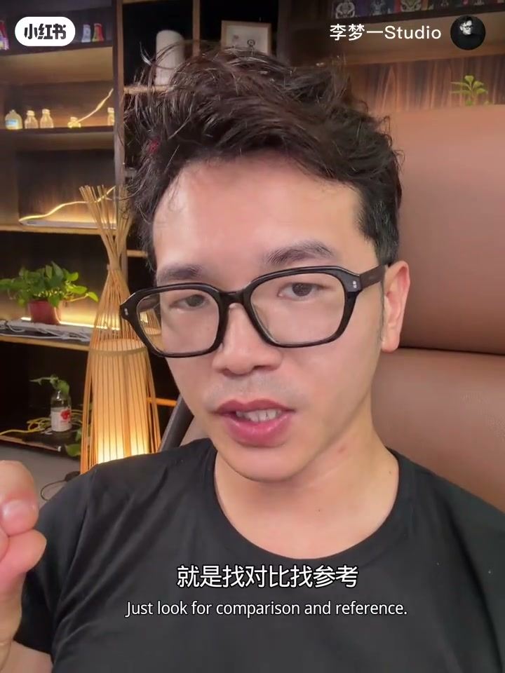

内容要点
「李梦一Studio」李梦一（十年商业摄影师、佳能合作讲师）用约三分半口播，回答「玩摄影长期没有进步」时该怎么自查。他把原因收成三条主线：视觉感受力弱、没有花够时间、技术到平台期后缺少思考与对照；器材选择作为第一类里的附带提醒。末段给出找对比、跟老师学、入圈子等提高路径，并以私信收束。以下为作者观点纪实，不是对所有摄影路径的定论。
知识结构
别人拍得好，自己一拍像生活照、跟手机差不多；先自查，首因往往是视觉感受力弱。
看日系摄影师作品（如森友治家庭系列、森山大道街头纪实），模仿拍摄练感受力；另提醒类手机机身+大广角难出效果。
经营很好的老板仍可能搞不定「小技术」——因为没花够时间；摄影是持续拍与感受的过程。
通病是少想、少看书；技术稳定后要问风格与表达深度，并靠找对比找参考继续提高。
原地踏步少见「单一绝招」：先练眼与选对工具边界，再保证练习时间，最后在平台期用思考与对照突破「画面好看但没自己」。
00:00–00:30开场：一拍像生活照，先自查
标题句先落下：「玩摄影长期没有进步的几个原因」。李梦一让观众「自查看一下」——有没有这种感觉：别人怎么拍得那么好，自己一拍却像生活照，跟手机拍的没有太大区别。
他把后文收成「首先呢这有两点」的框架（后文实际展开为练眼/器材、时间、平台期三条）。第一点开场就点明：对照片的视觉感受力比较弱——细腻细节、更有美感的角度这些能力偏弱。视频未交代具体拍摄场景，全程为室内口播。
00:30–01:11练眼与器材：日系作品 + 类手机广角
建议是：看一些日本摄影师的作品。口播举例「森友志」家庭系列——按画面右侧名单与烧录字幕校正为森友治；另提到「森森大道」街头「济世」——按语境校正为森山大道的街头纪实，强调张力。画面同时浮出奥山由之、上田义彦、筱山纪信等名字，作为日系参考池。
他让观众看表达方式与拍摄角度：日系摄影细腻、擅长情绪化表达；再模仿去拍，有助于提升视觉感受力。这是「练眼 → 再动手」的顺序，而不是先堆参数。
同一段还补了一类「对世界把控」的附带问题：买的机器全是跟手机差不多的，机器带的大广角本身很难出效果。作者立场是工具边界会影响出片，不是说换机就能进步；正文保留为作者判断。
01:11–02:08时间投入：门槛低，拍得好要成本
第二点来自咨询里的「很多老板」：能把公司经营得很好，却搞不定摄影这门「小小的技术」。原因在于没有花足够的时间——「摄影他是一个时间的一个过程」，要不断去拍、不断感受。
典型场景：经常出差，眼前有漂亮风景，也喜欢摄影、想记录下来，但「怎么拍」总感觉差一点。交流时对方觉得「我就一拍就行了」，却拍不出来——因为没有花时间去学这方面的东西。门槛虽低，人人都能拿起相机拍照；想要拍得好，仍需要时间成本投入。
02:08–03:25平台期：风格深度与找对比
第三点被说成「普通人的通病」，作者自称自己也会犯：从来不去想，以及看书非常少。当拍摄技术已经很好、东西也没有太大问题，却「达到一个平静」——按上下文更接近平台期/瓶颈：画面好看、构图还行、修图也漂亮，但缺少个人风格，表达内容谈不上深度，对照国内商业杂志也说不出「属于你自己厉害的地方」。这些更多是思考层面的事。
提高途径：找对比、找参考——跟一些老师学习、融入圈子，或在网上 PK、对照厉害的人的作品找差距。结尾转向运营话术：对摄影有疑问或想学摄影，可以私信。属作者号召，不是方法本身的一部分。

术语说明：正文将「森友志→森友治」「街头济世→街头纪实」「打起→拿起」等按画面/语境校正；原始 Whisper 分段仍完整保留在文末转录区。